One night above the clouds, landing at Narita in the evening

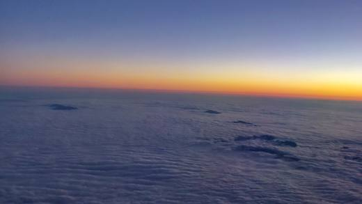

Kabukichō neon, Golden Gai, gardens, shrines, Harajuku and teamLab
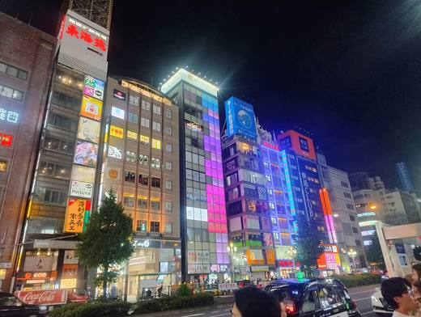
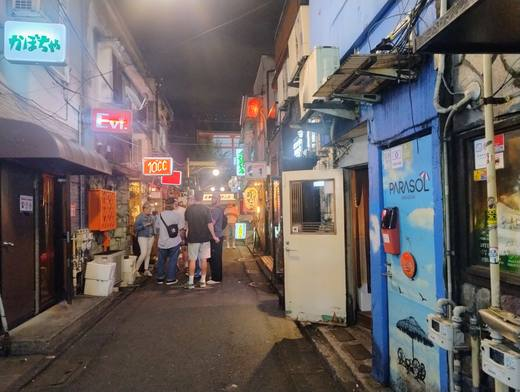


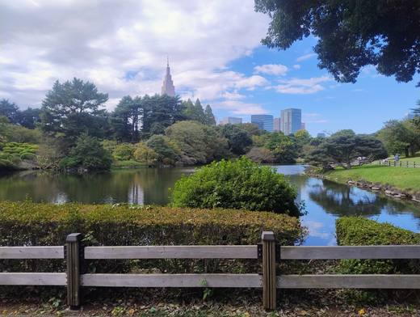


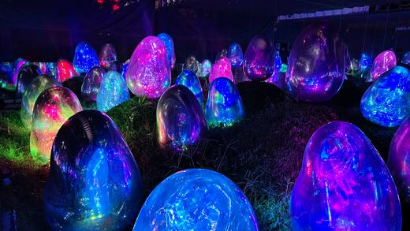
First hike: Tokyo's own mountain, 599 m — then a night in the arcades

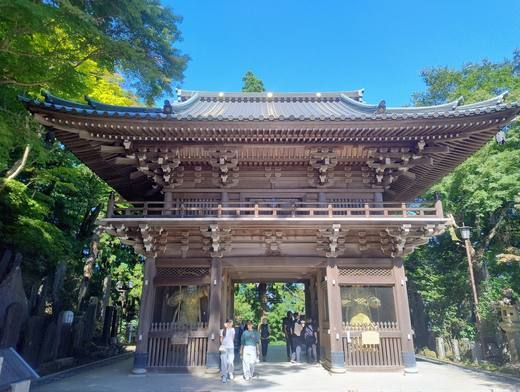
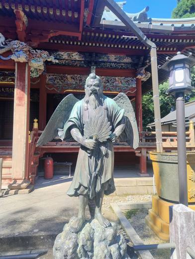

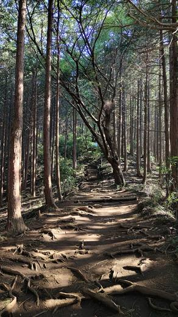


A typhoon-delayed train, a 97 m waterfall and gold-leaf shrines
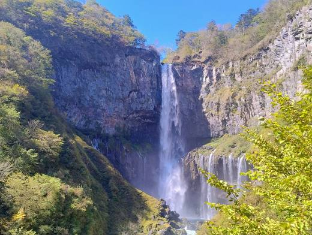
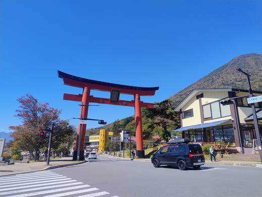
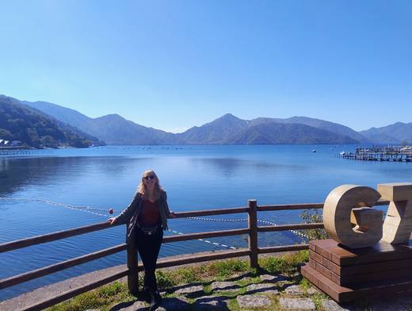
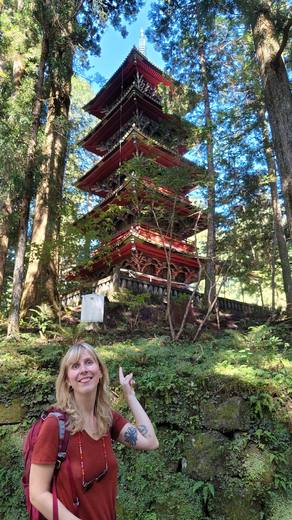


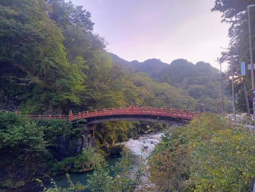

Sports Day holiday: a granite gorge, a ropeway and the first glimpse of Fuji
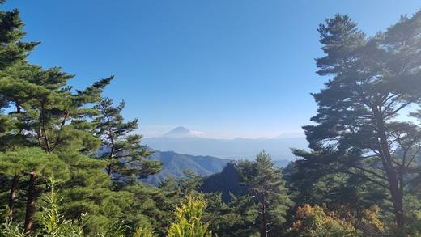
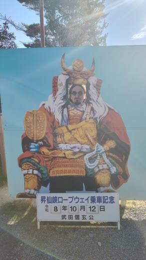
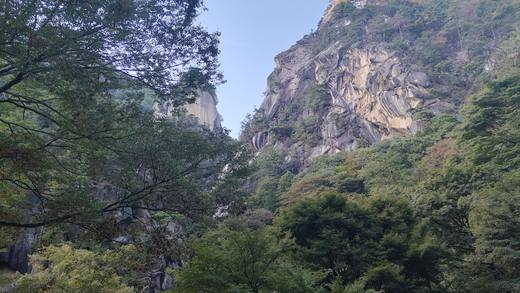

Six days hut to hut over Hōō Sanzan and Shirane Sanzan — up to 3,193 m
Southern Alps, hut to hut
13–18 Oct · Hōō Sanzan → Kitadake → Ainodake · on foot the whole way
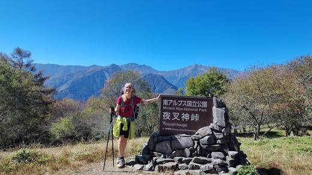

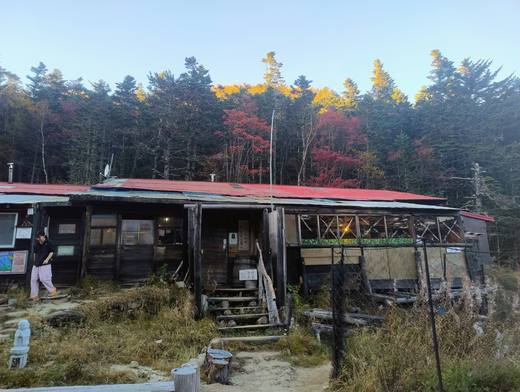
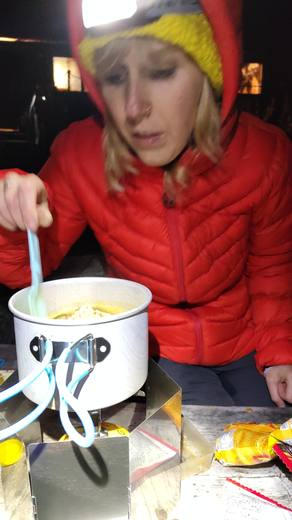


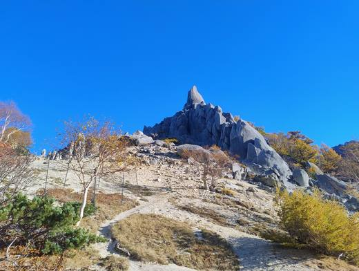
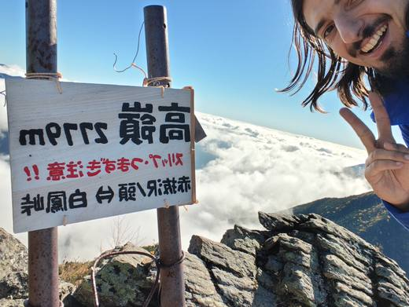
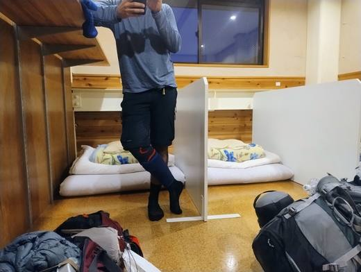


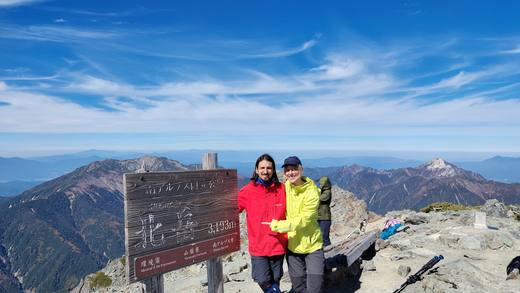

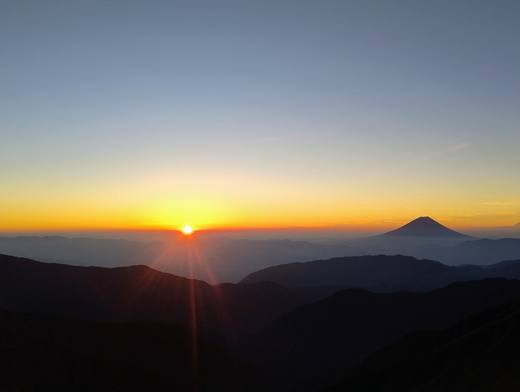

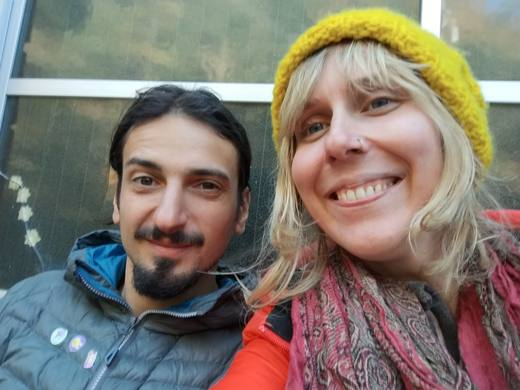

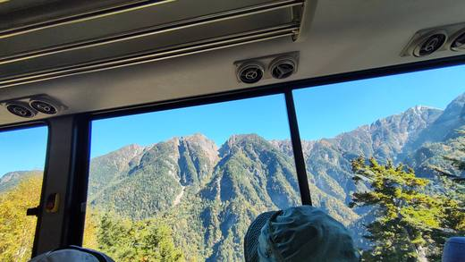


Out of the mountains by bus, bus, bus and train — then Gion at dusk
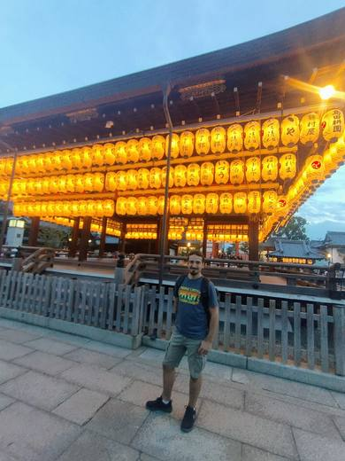


Two rented bikes, one tent, and the old road that carried salted mackerel 18 ri to Kyoto
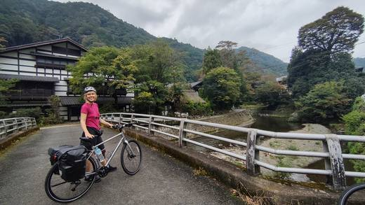
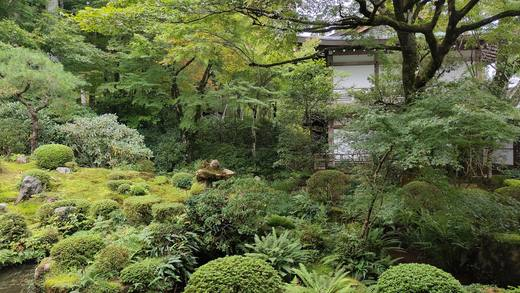
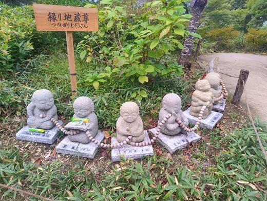
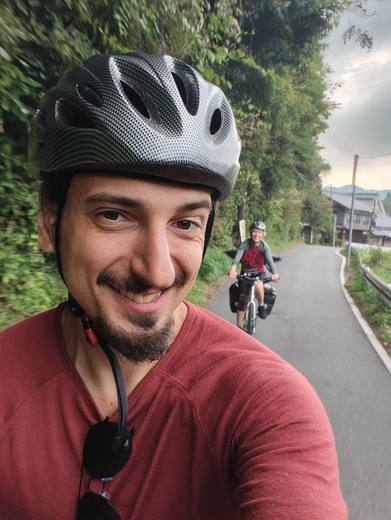


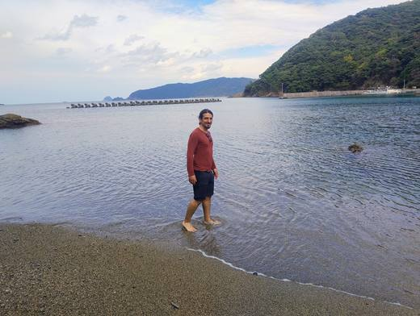
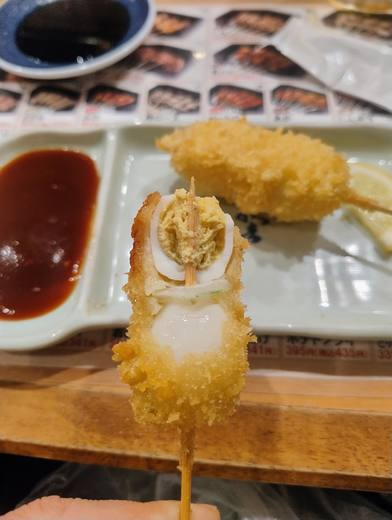

Cliffs, islands and lighthouses along the coast road to Wakasa Wada


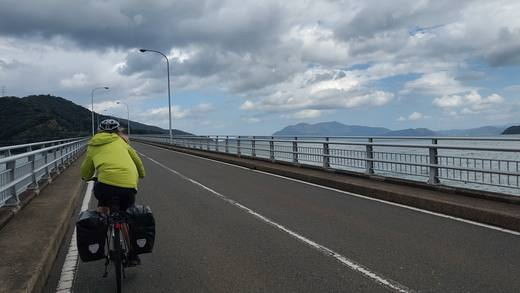
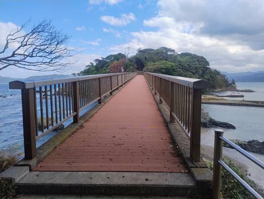

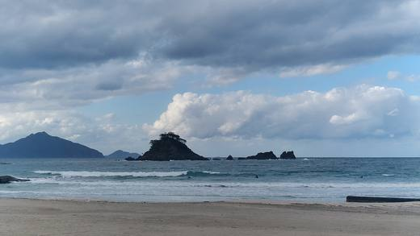

Tunnels through the hills to a village of thatched roofs

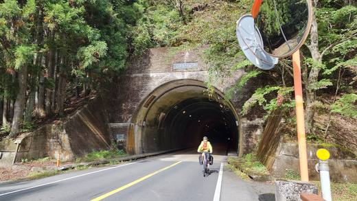


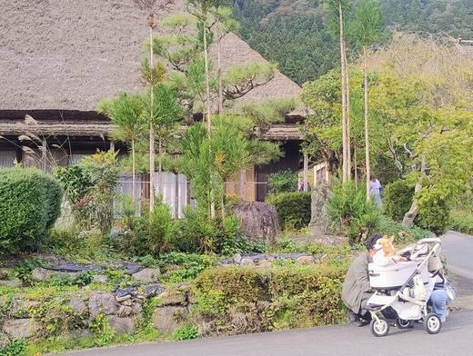

Rain in the valleys, a last campsite, and a festival full of lantern floats
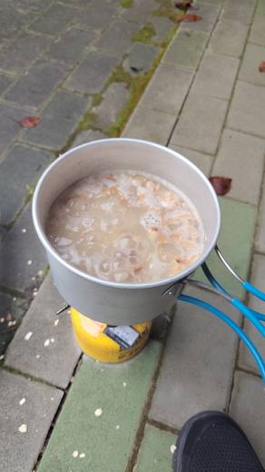
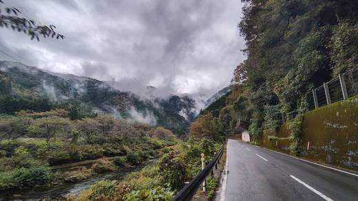

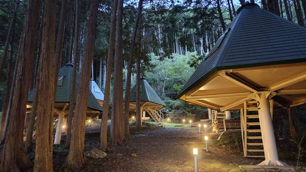


Bikes back by train — then torii, yōkai, beer and a castle in the rain
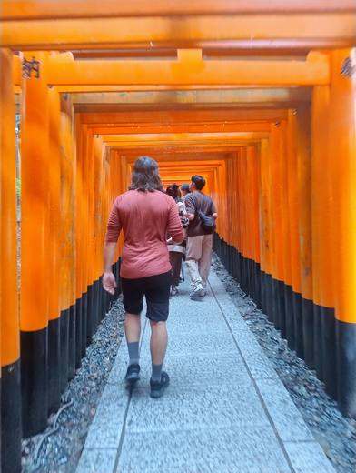


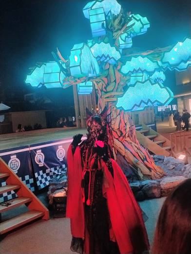

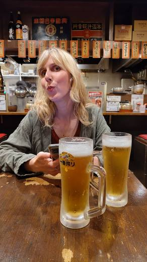
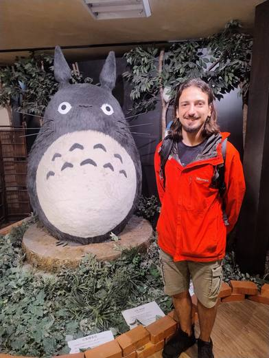
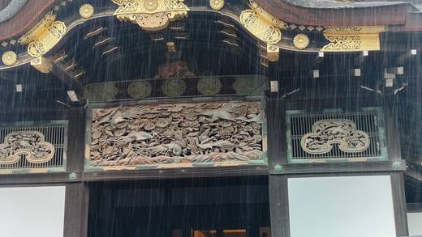
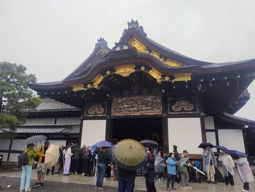
With Typhoon Champi around, the island plan became an old house on Tokyo Bay

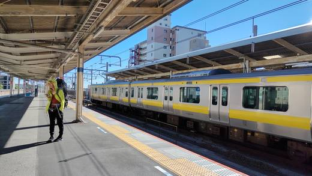
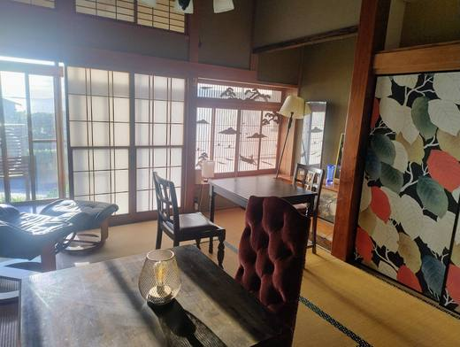
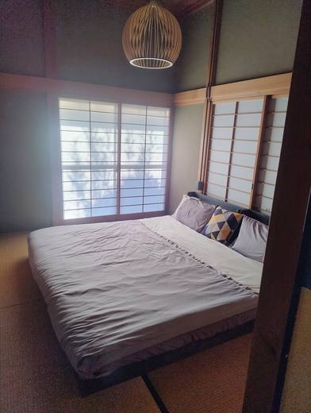


A last walk through Tokyo, an overnight flight, and Warsaw at 06:15


How high we went
Every photo with GPS, by altitude — four days higher than anywhere in Poland
624 photos, day by day
Coloured by how we got around that day — plus 23 videos
Ground covered
Kilometres in Japan by how we moved